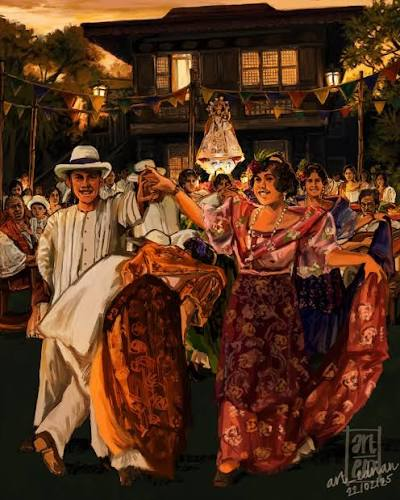
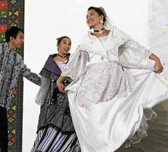
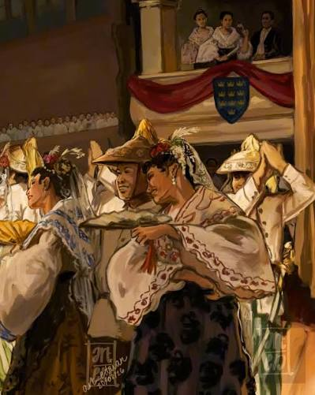

Yapak Ng Marikina


QR Code patungo sa Video Documention.
Sa bawat indak, may kuwentong dapat ipagpatuloy.
Kapag sinabing Marikina, sapatos agad ang madalas na pumapasok sa isip. Ngunit higit pa sa industriyang nagpakilala sa lungsod, may mga awit, sayaw, at tradisyong nagsasalaysay kung sino ang mga Marikeño. Sambit nga sa isang liriko ng kanta “Tayo ay pinag isa ng langit, lupa, kalikasan at kultura~”. Ganito rin ang mga Marikeño, nagkakaisa sa iisang himig at indak ng kultura.
Sa Balse Marikina at Lerion, makikita natin ang kulturang hindi lamang ipinapakita sa entablado, kundi isinasabuhay at ipinapasa sa bawat henerasyon. Ngunit habang patuloy na nagbabago ang panahon, isang tanong ang mahalagang pag-isipan: paano natin mapananatiling buhay ang mga kulturang unti-unti nating nakakalimutan?
Kapag ang Sayaw ay Nagiging Kuwento
Ang Balse Marikina ay isang tradisyunal na sayaw na iniuugnay sa impluwensiyang Espanyol. Mula sa salitang valse o waltz, inangkop ito ng mga Marikeño sa kanilang sariling indak, kasuotan, musika, at paraan ng pagdiriwang. Iniuugnay ang Balse Marikina sa Lutrina, isang relihiyosong prusisyon na isinasagawa noon bilang panalangin para sa ulan at proteksiyon sa panahon ng tagtuyot at peste sa pananim. Matapos ang prusisyon, nagtitipon ang mga mamamayan para sa handaan at pasasalamat kung saan kabilang sa mga pagtatanghal ang Balse Marikina.

Sa saliw ng Musikong Bumbong at tradisyunal na kasuotan, naging bahagi ang sayaw ng sama-samang buhay at pananampalataya ng komunidad. Higit sa mga galaw nito, ipinapakita ng Balse Marikina kung paano kayang tanggapin ng mga Marikeño ang impluwensiya mula sa ibang kultura at gawin itong bahagi ng sariling pagkakakilanlan.
Nang Maunawaan ang Indak
Para sa isa sa aming mga kagrupo na minsang nagtanghal ng Balse Marikina at Lerion, hindi naging madali ang unang pagsubok. Nahirapan siyang sabayan ang tempo ng musika at muntik nang sumuko. Ngunit nang tanungin niya ang sarili kung bakit ganito ang sayaw at kung ano ang kahulugan ng bawat galaw, napagtanto niyang hindi sapat na alam lamang ang mga hakbang. Kailangang damhin, isapuso, at unawain ang kuwentong dala nito.
Mula noon, mas naging makabuluhan para sa kaniya ang pagsasayaw ng tradisyonal na sayaw.
Mga Yapak na Unti-unting Nawawala
Sa isa naman naming panayam, ibinahagi na noon ay mas madalas makita ang Lerion at Balse Marikina sa mga lansangan, lalo na tuwing may okasyon at parada. Para sa mga Marikeño, ang mga sayaw na ito ay hindi lamang pagtatanghal kundi salamin din ng kanilang dating pamumuhay at pagkakakilanlan. Sa kasalukuyan, patuloy pa rin namang naitatanghal ang mga ito sa mga paaralan, lokal na pagdiriwang, at iba pang gawaing pangkultura subalit hindi na masayado. Ngunit kasabay ng modernisasyon at mabilis na pag-usbong ng mga bagong uso sa social media, nagbabago rin ang interes ng kabataan. Mas madali nating nakikilala ang mga sikat na sayaw at kulturang nakikita online kaysa sa sariling mga tradisyon.

Ayon din sa aming panayam, malaki ang naging epekto ng modernisasyon at pandemya sa patuloy na pagkilala sa mga sayaw na ito. Unti-unting nawala ang sigla at pagnanais ng maraming Marikeño na itanghal ito dahil sa sabay-sabay na pagdanas ng suliranin,hirap at problema sa nangyaring pandemya, korapsyon at pagkalulong sa teknolohiya. Dahil dito, hangarin naming muling maibalik ang kanilang sigla at mas mapalapit muli ang mga mamamayan at kabataan o maging ng buong komunidad rito. Sa panahon natin ngayon, napakalaking panganib kapag tuluyang nawala ang Balse Marikina at Lerion. Unti-unting mabubura ang natatanging identidad at “kaluluwa” nating mga Marikeño dahil mapuputol ang buhay na koneksyon natin sa kasaysayan ng ating mga ninuno. Ang paglimot natin sa mga katutubong sayaw na ito ay tila pagbubukas din ng pinto para tuluyang lumubog ang ating pamanang kultura sa gitna ng mabilis na modernisasyon. Higit pa rito, mawawalan tayo ng mahahalagang tradisyong nagbubuklod at nagpapatibay ng ating samahan bilang magkakalugar. Kaya naman, kapag pinabayaan nating mawala ang mga ito, para na rin nating hinayaang mamatay ang pagpapahalaga at pagmamahal sa mga kuwentong bumuo sa kung sino tayo bilang mga Marikeño.
Hindi naman masama ang pagbabago. Ngunit, maaaring gamitin natin ito upang umunlad ang paraan ng pagtatanghal ng isang kultura, ng ating kultura. Ngunit habang nagbabago ang anyo nito, hindi dapat mawala ang kahulugan at kuwentong pinagmulan nito.
Hindi Lang Ito Sayaw
Ang Balse Marikina at Lerion ay hindi lamang mga sayaw mula sa nakaraan. Ang mga ito ay mga buhay na bahagi ng pagkakakilanlan ng Marikina—mga bakas ng kasaysayan, pananampalataya, pamumuhay, at pagkamalikhain ng mga naunang Marikeño. Bilang kabataan, hindi natin kailangang maging eksperto o mananayaw upang makatulong sa pangangalaga nito. Maaari tayong magsimula sa simpleng pagkilala sa ating mga tradisyon, pakikinig sa mga taong may kaalaman tungkol dito, pagtangkilik sa mga lokal na pagtatanghal, at pagbabahagi ng tamang impormasyon sa iba. Higit sa lahat, matuto tayong sumubok na sayawin at indakin ang Balse Marikina at Lerion.

Ang pagpapanatili ng kultura ay hindi nangangahulugang ibalik ang nakaraan nang eksaktong katulad nito. Ang mahalaga ay maunawaan natin ang kahulugan nito, isabuhay o itanghal ang mga ito at maipasa ang kuwentong dala nito sa susunod na henerasyon. Bukod dito, tayong mga kabataan ay makatutulong sa iba’t ibang paraan upang panatilihing buhay ang mga pamanang kultura ng ating mga ninuno. Halimbawa na lang ay ang pag-blog ukol sa Lerion at Balse Marikina, panonood ng mga lokal na pagtatanghal gamit ang iba’t ibang streaming platform, at ang paghihikayat sa kapwa kabataan na tangkilikin ang mga sayaw na ito. Makatutulong din ang patuloy nating pagsuporta—maging sa pag-aaral man o sa mismong pagtatanghal ng ating mga katutubong sayaw. Sa pamamagitan ng mga simpleng hakbang na ito, hindi lang basta natututo tayong mga kabataan, kundi mas naiintindihan din natin ang tunay na kahalagahan ng pagpapahalaga sa pamanang nagpapatibay sa ating identidad bilang mga Marikeño.
Dahil ang bawat sayaw ay may kuwentong iniwan ng mga nauna sa atin. Sa bawat indak, may kuwento. Sa bawat kuwento, may pamana. At sa bawat pamana, may susunod na yapak na magiging bahagi ng Marikina.